Part Context
Part: Part 3 - Distributed Systems Concepts
Position: Chapter 10 of 60
Why this part exists: This section explains the trade-offs that appear once systems scale across machines, replicas, regions, and failure domains.
This chapter builds toward: reasoning about growth, elasticity, bottlenecks, and the system changes required as demand increases
Overview
Scalability is the ability of a system to handle growth without unacceptable degradation in latency, reliability, correctness, or cost. Growth can mean more requests, more data, more users, more geographic spread, or more product complexity. Architects care about scalability because systems almost never fail when they are small and lightly used. They fail when growth exposes assumptions that were never made explicit.
This chapter explains how systems scale vertically, horizontally, and elastically, and why the real question is not “can it scale?” but “what will become the bottleneck first, and what design changes will that force?”
Why This Matters in Real Systems
- Scalability determines whether a product can survive growth without repeated architectural emergencies.
- Different layers of a system scale in different ways; understanding those differences prevents naive designs.
- Scalability decisions affect cost, operational complexity, and resilience at the same time.
- Interviewers use scalability questions to see whether candidates can reason beyond the happy path of a small system.
Core Concepts
Vertical scaling
Scaling up means giving one machine more CPU, memory, storage, or network capacity. It is often simple at first but has hard limits and can create expensive single points of failure.
Horizontal scaling
Scaling out means adding more machines or instances and distributing work across them. It often improves both capacity and fault isolation but requires statelessness, partitioning, or coordination mechanisms.
Elasticity and auto scaling
Elasticity is the ability to adjust capacity with demand. Auto scaling helps align cost with real load, but only when the scaling signals and warm-up behavior are well understood.
Bottleneck-driven design
Scalability is rarely uniform across the system. The web tier, cache tier, database, queue consumers, and storage layers all hit limits differently.
Key Terminology
| Term | Definition |
|---|---|
| Vertical Scaling | Increasing the resources of one machine or node. |
| Horizontal Scaling | Adding more machines or instances to share the workload. |
| Elasticity | The ability to add or remove capacity dynamically as load changes. |
| Bottleneck | The most limiting component in the current system path. |
| Headroom | Reserved excess capacity used to handle spikes or partial failures. |
| Hotspot | A skewed concentration of traffic or data that overloads one component or partition. |
| Autoscaler | A mechanism that changes capacity automatically based on observed conditions. |
| Throughput | The total amount of work the system can complete in a period of time. |
Detailed Explanation
Scaling is never one-dimensional
A system may scale well in request count but poorly in storage growth, or scale in reads but not writes. That is why architects look for the current bottleneck instead of asking whether the system is “scalable” in a vague sense. The answer depends on workload shape.
Vertical scaling buys time, not infinity
Adding a larger machine is often the fastest way to survive early growth. It can be the correct decision when the workload is still modest. But there are physical, financial, and operational limits. One very large machine is often expensive, harder to replace, and still a single failure domain.
Horizontal scaling needs architectural support
Adding more application instances works only if requests can be served by any healthy instance. That usually means stateless services, shared session state, externalized caches, and data partitioning or shared storage behind the instances.
Elasticity is a control problem
Autoscaling sounds simple, but bad scaling signals can cause oscillation, delayed response, or runaway cost. A queue-backed worker system may need scaling based on lag, not CPU. A web tier may need to account for warm-up time, connection priming, or cache fill behavior.
Scalability and resilience interact
A horizontally scaled system often tolerates instance loss better than a vertically scaled singleton, but it also introduces more partial failures, more coordination, and more moving parts to observe. The gain in capacity comes with operational complexity.
Diagram / Flow Representation
Vertical vs Horizontal Scaling
Bottleneck View

Real-World Examples
- Amazon during Black Friday scales web and API tiers horizontally because demand spikes quickly and failure isolation matters.
- Google search serving benefits from enormous horizontal distribution because global scale and resilience are core requirements.
- Netflix autoscaling behavior depends on service type; stateless serving layers scale differently from encoding pipelines.
- An internal analytics tool may use vertical scaling for a long time because the cheaper architecture is still sufficient.
Case Study
Black Friday traffic on an e-commerce platform
Black Friday is a classic scalability case because the challenge is not only total traffic, but highly concentrated peak traffic combined with high business stakes.
Requirements
- Serve a dramatically higher request volume than normal without collapsing user experience.
- Keep browse, cart, and checkout paths available under heavy load.
- Protect stateful systems such as inventory and order databases from read storms.
- Scale cost-effectively rather than paying Black Friday capacity costs year-round.
- Fail gracefully if some services or zones degrade.
Design Evolution
- A smaller version may rely on vertical growth and a modest cluster of web instances.
- As seasonal peaks become larger, the system adds stronger caching and horizontally scaled stateless application tiers.
- As deployment and traffic risk increase, autoscaling and queue-backed side-effect workflows become more important.
- As the platform matures, capacity planning and failure drills become part of the architecture, not just part of operations.
Scaling Challenges
- The database may become the first bottleneck if product and catalog reads are not heavily cached.
- Autoscaling may react too slowly if warm-up time is ignored.
- Traffic is not evenly distributed; a few popular products or campaigns can create hotspots.
- Degraded dependencies can cause retry storms that make scaling harder rather than easier.
Final Architecture
- Horizontally scaled stateless web and API tiers behind load balancers.
- Aggressive caching and CDN use for product and asset reads.
- Protected stateful systems with queue-backed asynchronous side effects.
- Capacity plans with headroom and tested autoscaling rules.
- Observability focused on bottleneck layers, not only aggregate traffic.
Architect's Mindset
- Ask what grows fastest: requests, writes, data volume, fan-out, or coordination cost.
- Treat the bottleneck as the real design driver, not the easiest component to scale.
- Scale stateful systems more carefully than stateless compute.
- Use elasticity to match cost to demand, but do not mistake automation for architectural correctness.
- Plan for partial failure while scaling, not only for happy-path growth.
Scalability Toolbox
Every scalability problem maps to proven patterns. This table indexes them by bottleneck.
| Bottleneck | Pattern | How It Helps | Chapter |
|---|---|---|---|
| Read-heavy DB | Caching (Redis) | Absorb repeated reads | Ch 6 |
| Read-heavy DB | Read replicas | Offload reads to replicas | Ch 5 |
| Write-heavy DB | Sharding | Distribute writes by partition key | F7: Data Partitioning |
| Write-heavy DB | Async writes (queue + worker) | Move writes off critical path | Ch 8 |
| Compute-heavy API | Horizontal scaling + LB | Add stateless instances | Ch 7 |
| Compute-heavy API | CDN for cacheable responses | Offload edge-servable responses | Ch 9 |
| Fan-out heavy | Event streaming (Kafka) | Decouple producer from consumers | Ch 8 |
| Latency-sensitive global | Multi-region deployment | Serve from nearest region | Ch 4, Ch 7 |
| Storage growth | Lifecycle tiering | Move aging data to cheaper tiers | Ch 9 |
| Cost scaling linearly | Caching + async + right-sizing | Sub-linear cost growth | Ch 3, Ch 6 |
Interview pattern: (1) Identify the bottleneck → (2) Pick the pattern → (3) Project the limit → (4) Reference the cost.
Scaling Anti-Patterns
Hot Partitions
Traffic is unevenly distributed across partitions, overloading one while others sit idle.
Causes: Low-cardinality partition key, sequential keys, celebrity/viral content.
Fixes: High-cardinality keys, jitter suffix for hot keys, separate handling for known hot entities, per-partition monitoring.
Thundering Herd
A single event (cache expiry, failover, restart) causes all clients to simultaneously request the same resource.
Fixes: Jittered TTLs, request coalescing, stale-while-revalidate (cache); slow-start weight (LB); connection pool limits (DB).
Retry Storms
A slow dependency gets worse as clients retry, adding 2-3x load in a positive feedback loop.
Fixes: Exponential backoff + jitter, retry budgets (10-20%), circuit breakers, deadline propagation.
Premature Optimization
Adding sharding, microservices, or distributed caching before the system needs it. Complexity slows development without addressing the actual bottleneck.
Signals: DB at 5% utilization with 3 shards; service mesh for 3 services; team spends more time on infra than product.
Fix: Start simple. Measure. Scale the bottleneck. Repeat.
Multi-Tenant Scaling
SaaS platforms must scale for diverse tenant workloads. One large tenant can degrade the experience for all others ("noisy neighbor").
| Challenge | What Happens | Mitigation |
|---|---|---|
| Noisy neighbor | One tenant's bulk import saturates shared DB | Per-tenant connection limits; rate limiting |
| Uneven growth | 5% of tenants generate 80% of traffic | Tier tenants; dedicated infra for largest |
| Data skew | One tenant has 100M rows; most have 10K | Shard by tenant_id; monitor per-tenant volume |
| Isolation failures | Slow query blocks other tenants | Query timeouts; separate replicas for large tenants |
| Cost attribution | Can't determine which tenant drives cost | Tag by tenant; per-tenant metering |
Tenant Scaling Tiers
| Tier | Size | Infrastructure | Isolation |
|---|---|---|---|
| Free / Small | < 1K req/day | Shared everything | Application-level (tenant_id) |
| Mid-tier | 1K-100K req/day | Shared compute, dedicated DB schema | Schema-level / resource limits |
| Enterprise | > 100K req/day | Dedicated cluster + DB | Full infrastructure isolation |
Saturation Monitoring and Capacity Planning Loops
Scaling is a continuous feedback loop connecting monitoring → forecasting → capacity → SLO validation → cost review.
Saturation Signals by Layer
| Layer | Signal | Threshold | Action |
|---|---|---|---|
| API / Compute | CPU utilization | > 70% sustained | Scale out or up |
| API / Compute | Request queue depth | > 100 pending | Scale out; investigate slow endpoints |
| Database | Connection pool utilization | > 80% | Increase pool; add replicas; optimize queries |
| Cache | Memory utilization | > 85% | Scale cluster; evict low-value keys |
| Queue | Consumer lag | Growing over time | Scale consumers; investigate slow processing |
| Storage | Disk utilization | > 80% | Lifecycle tiering; archive cold data |
Tying Scaling to SLOs and Cost
| SLO Status | Capacity Action | Cost Implication |
|---|---|---|
| Healthy, headroom > 50% | Right-size: reduce overprovisioned resources | Save money |
| Healthy, headroom 20-50% | Maintain current | Stable |
| Healthy, headroom < 20% | Proactive scale-up | Invest in reliability |
| Degraded (burn rate > 1x) | Immediate scale-up + investigation | Cost justified by SLO |
| Breached (budget exhausted) | Emergency scaling + deploy freeze | Reliability > cost |
Common Mistakes
- Calling a system scalable because only the web tier can scale while the real bottleneck cannot.
- Using average traffic instead of peak traffic to justify capacity.
- Assuming horizontal scaling is easy even when sessions, state, or partitions are poorly designed.
- Relying on autoscaling without understanding warm-up delay or signal quality.
- Ignoring skew and hotspots in otherwise large-scale systems.
Interview Angle
- Scalability is a staple interview theme because it forces candidates to reason about growth rather than only design the first version.
- Strong answers identify the likely bottleneck, discuss vertical vs horizontal trade-offs, and explain how the design evolves over time.
- Interviewers often probe what changes at 10x or 100x traffic because that reveals whether the candidate understands architectural pressure points.
- A weak answer says “add more servers” without addressing state, caches, databases, or failure behavior.
Quick Recap
- Scalability is the ability to absorb growth without unacceptable degradation.
- Vertical scaling buys simplicity early but has hard limits.
- Horizontal scaling improves capacity and resilience but demands cleaner architecture.
- Elasticity helps align cost with demand but depends on good signals and warm-up planning.
- Real scalability work begins by finding the bottleneck.
Practice Questions
- What is the difference between vertical and horizontal scaling?
- Why can the web tier scale while the database remains the real bottleneck?
- What signals should drive autoscaling for an API tier versus a worker tier?
- How would Black Friday traffic change your architecture priorities?
- Why is statelessness so helpful for horizontal scaling?
- What kinds of hotspots can appear even in a large cluster?
- How would you explain scalability trade-offs to a finance stakeholder concerned about cloud cost?
- Why is headroom important even when autoscaling exists?
- How does scalability interact with fault tolerance?
- What part of a design is often hardest to scale and why?
Further Exploration
- Carry this bottleneck mindset into the next chapters on consistency and fault tolerance.
- Study partitioning, autoscaler behavior, and hotspot mitigation in more depth.
- Practice taking one existing system and describing how it changes at 10x scale.
Navigation
- Previous: Storage Systems
- Next: Consistency & CAP Theorem